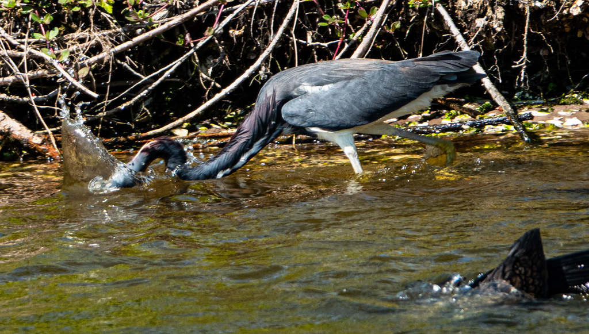

- The tricolored heron is a slender, elegant wader in blue-gray and purple with a clean white belly — the white stripe down its front is the quickest field mark.
- It is an active, almost theatrical hunter, dashing, lunging, and twisting through the shallows after small fish rather than standing still.
- It tends to hunt alone, a bit more solitary than the other wading birds it shares the ponds with.
- Once known as the Louisiana heron, it is now a Threatened species in Florida, with declining numbers in the Tampa Bay area.
Blue-gray head, back, and wings washed with purple, and a distinctive white belly and underparts.
Long and slender, often with a rusty-and-white stripe down the front.
Long, thin, and pointed.
Active, darting feeding style.
Generally quiet away from the colony, where it gives groans and squawks.
A medium, slim heron that is dark above and clean white below, working the shallows in quick, restless movements. That white belly on an otherwise dark heron is the giveaway, and the active hunting style separates it from the patient great blue and the all-white egrets.
Mainly small fish, plus aquatic insects, crustaceans, and amphibians, caught with quick stabs during active pursuit.
Along the pond shallows and edges, usually hunting alone with quick, darting movements. Look for the dark heron with the bright white belly.
Year-round resident. Most often seen actively feeding in the shallows during the day.
Keep your distance and do not feed it. As a Threatened species, it is especially worth giving room — and please pack out any fishing line, which entangles wading birds.


- © Rob Carr (CC-BY-NC), via iNaturalist
- © Cole Guyton (CC-BY-NC), via iNaturalist